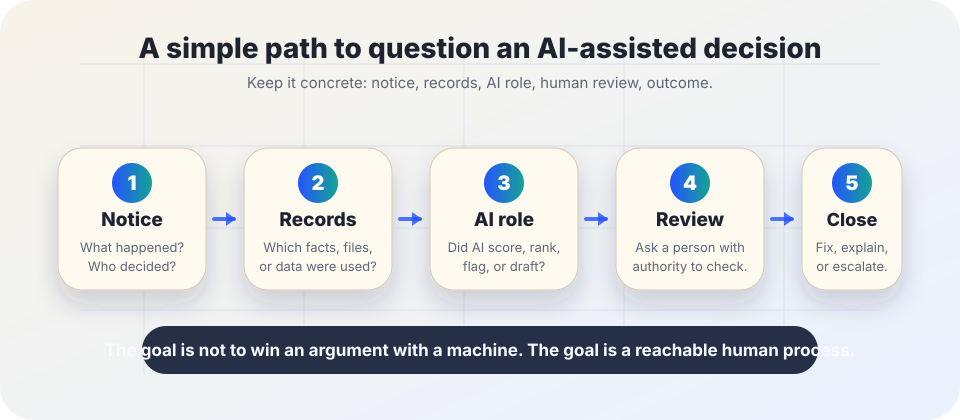

AI accountability
AI appeal path checklist: how to question an AI-assisted decision.
Use this when an AI tool may have helped deny, rank, flag, score, summarize, route, or recommend something that affects a person. The goal is a reachable human process: notice, records, explanation, correction, review, and closure.
The short answer
An AI appeal path is a plain way for an affected person to ask: Was AI involved, what information was used, who can review it, how can I correct errors, and when will I get an answer?
This is not a promise that every AI-related dispute has the same legal rights everywhere. It is a practical harm-reduction pattern. NIST’s AI Risk Management Framework treats transparency, accountability, and recourse as part of managing AI risk. The Blueprint for an AI Bill of Rights describes notice, explanation, human alternatives, consideration, and fallback as protections people should have around automated systems. Data-protection guidance from the UK Information Commissioner’s Office also emphasizes individual rights, human review, and ways to challenge certain automated decisions.

When to use this checklist
Use it when AI may affect
- access to a service, benefit, class, job, loan, home, appointment, or opportunity;
- a score, ranking, eligibility label, fraud flag, risk label, priority list, or disciplinary action;
- official records, case notes, performance reviews, grades, medical summaries, or public claims;
- routing to a slower, worse, or more burdensome process.
Do not overclaim
- This checklist is educational, not legal advice.
- Laws and appeal rights differ by place, sector, contract, and institution.
- For urgent legal, medical, immigration, employment, housing, safety, or benefits issues, contact a qualified advocate, lawyer, regulator, union, ombuds, or responsible agency.
The five-part appeal path
- Ask for the decision notice. Get the date, decision, decision-maker, deadline to respond, and the channel for review. Save screenshots, letters, emails, portal messages, and reference numbers.
- Ask what records were used. Request the data, documents, scores, summaries, attendance records, account history, identity records, or other facts used to make or support the decision. If a record is wrong, name the exact correction requested.
- Ask what role AI played. Use ordinary language: Did software classify, rank, score, flag, summarize, recommend, draft, or automate any part of this decision? Was the AI output binding, advisory, or one input among others?
- Request human review by someone with authority. A useful review is not just a staff member reading the AI output again. Ask for a person who can consider context, correct records, override the result, explain the reason, and provide a next step.
- Get the outcome in writing. Ask what changed, what did not change, why, what evidence was considered, and whether there is a further escalation path. Record the final answer so the organization can learn and so the person is not trapped in a loop.
If the organization cannot explain who owns review, what records were used, or how errors are corrected, that is a governance problem — not a user comprehension problem.
A plain-language message template
Copy, adapt, and keep the tone factual. Replace bracketed text.
Hello,
I am asking for review of [decision or action] dated [date/reference number]. This decision affects [me / my application / my record / my access to service].
Please tell me whether any automated system or AI tool helped classify, score, flag, summarize, recommend, draft, or make this decision. Please also provide the records or facts used, the policy or criteria applied, and the process for correcting inaccurate information.
I request human review by someone with authority to consider context, correct errors, and change the outcome if appropriate. Please send the result in writing, including the reason for the decision and any further appeal or escalation step.
Thank you.
If your organization uses AI, design the path before launch
- Put the appeal channel near the decision. Do not hide review instructions in a general contact form.
- Name the owner. The owner must be able to pause, correct, override, notify, or escalate — not merely forward complaints.
- Preserve evidence. Keep enough logs, model/version notes, prompts, source records, and human review notes to reconstruct what happened without exposing unrelated sensitive data.
- Separate explanation from blame. People need actionable reasons and correction steps, not a technical lecture or a vendor deflection.
- Make correction real. If a person proves a record is wrong, define how the source record, AI workflow, downstream decision, and future reuse are fixed.
- Track patterns. Repeated appeals about the same AI output, group, source record, or workflow should trigger risk review, not just individual case closure.
Warning signs that the path is not real
- No one can say whether AI was used.
- The reviewer cannot change the outcome.
- The only explanation is “the system says so.”
- The person cannot see or correct the key records used against them.
- Deadlines are shorter than the time needed to get records.
- The appeal process requires tools, language, identity documents, or internet access the affected person may not have.
A good appeal path lowers harm for individuals and improves the system for everyone because errors become visible instead of being normalized.
Sources and further reading
- NIST — AI Risk Management Framework
- NIST AI 100-1 — Artificial Intelligence Risk Management Framework
- The White House OSTP archive — Blueprint for an AI Bill of Rights
- UK Information Commissioner’s Office — How do we ensure individual rights in our AI systems?
- European Union — Regulation (EU) 2024/1689, Artificial Intelligence Act
This guide is practical education, not legal, compliance, employment, benefits, medical, immigration, housing, or financial advice. For high-stakes decisions, use the official appeal process and seek qualified help where needed.